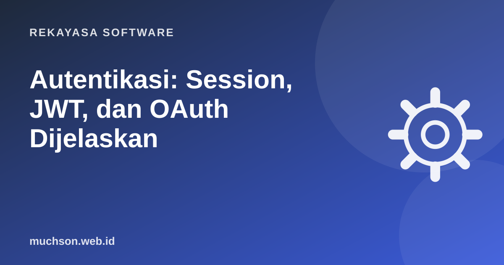

Beranda › Artikel › Rekayasa Software
Rekayasa SoftwareAutentikasi: Session, JWT, dan OAuth Dijelaskan
Login terlihat sederhana: isi email dan password, masuk. Di balik layar, server harus terus mengingat siapa Anda di setiap klik berikutnya. Ada beberapa cara melakukannya, dan memilih yang salah bisa membuka celah keamanan.

Autentikasi vs otorisasi
1. Session berbasis cookie
Cara klasik dan masih sangat baik untuk aplikasi web. Setelah login, server membuat session (disimpan di memori, database, atau Redis) dan mengirim id session acak dalam cookie. Browser otomatis mengirim cookie itu di setiap permintaan.
Set-Cookie: sid=9f8a7c...; HttpOnly; Secure; SameSite=Lax; Path=/; Max-Age=86400- HttpOnly: JavaScript tidak bisa membaca cookie, mengurangi dampak XSS.
- Secure: hanya dikirim lewat HTTPS.
- SameSite: membatasi pengiriman dari situs lain, mengurangi CSRF.
Laravel, Django, Rails, dan Express (express-session) menyediakan ini bawaan.
2. JWT (JSON Web Token)
JWT adalah token yang berisi data (misalnya id user dan waktu kedaluwarsa) dan ditandatangani server. Server tidak perlu menyimpan session; cukup memeriksa tanda tangannya.
eyJhbGciOiJIUzI1NiJ9.eyJzdWIiOiI3Iiwicm9sZSI6ImFkbWluIiwiZXhwIjoxNzk5OTk5OTk5fQ.Tq3...
# tiga bagian dipisah titik:
# header : {"alg":"HS256"}
# payload : {"sub":"7","role":"admin","exp":1799999999}
# signature: tanda tangan dari header + payload + kunci rahasiaPayload JWT hanya di-encode Base64, tidak dienkripsi. Siapa pun yang memegang token bisa membaca isinya. Jangan simpan data sensitif di sana.
| Kelebihan JWT | Kekurangan JWT |
|---|---|
| Tidak perlu penyimpanan session di server | Sulit dicabut sebelum kedaluwarsa |
| Cocok untuk API dan banyak layanan | Token besar dikirim setiap permintaan |
| Mudah dipakai aplikasi mobile | Mudah salah konfigurasi (algoritma, masa berlaku) |
Praktik umum: access token berumur pendek (misalnya 15 menit) plus refresh token berumur panjang yang disimpan aman dan bisa dicabut di server.
3. OAuth 2.0 dan OpenID Connect
OAuth 2.0 bukan cara login, melainkan cara memberi izin aplikasi lain mengakses data Anda tanpa memberi password. Contoh: aplikasi kalender meminta izin membaca Google Calendar Anda. OpenID Connect (OIDC) adalah lapisan di atas OAuth untuk login ("Masuk dengan Google").
Untuk aplikasi web dan mobile modern, alur yang direkomendasikan adalah Authorization Code dengan PKCE. Alur lama "implicit" sudah tidak dianjurkan.
Jadi pakai yang mana?
Menyimpan token di localStorage membuatnya bisa dicuri bila ada celah XSS. Untuk aplikasi web, cookie HttpOnly umumnya lebih aman.
Tanya jawab
Apakah JWT lebih aman dari session?
Sebaiknya membuat sistem login sendiri?
Apa itu passkey?
Sumber dan bacaan lanjut
- OWASP Cheat Sheet: Session Management
- RFC 7519: JSON Web Token (JWT)
- RFC 7636: Proof Key for Code Exchange (PKCE)
- OAuth.net: OAuth 2.0